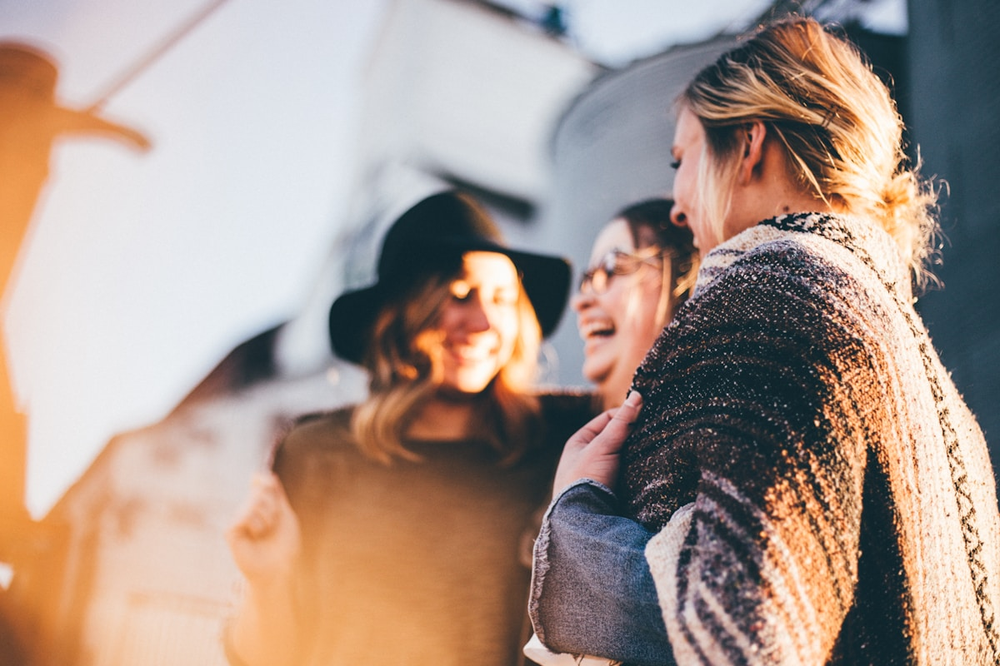

01 — Groupe quartier

02 — Jeunes assis, discussion

03 — Amis, moment

04 — Discussion informelle

05 — Jeune urbain

06 — Accompagnement social

07 — Repas convivial

08 — Groupe projet

09 — Jeune homme street

10 — Portrait jeune

11 — Atelier groupe

12 — Discussion dehors

13 — Jeune pro confiant

14 — Espace travail

15 — Jeune femme, regard